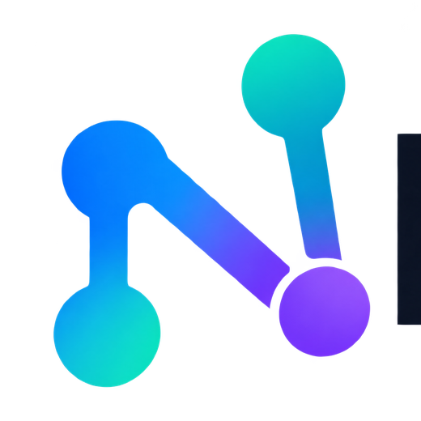

Anonymous searches share a small daily budget with your network. Use your own free key for a personal budget.
Keep phrases in quotes. Precise requires all concepts; Balanced requires the first and at least one other; Exploratory accepts any. Explicit AND, OR and NOT groups override the mode.
Matches help guide your reading; they do not guarantee relevance or complete coverage.